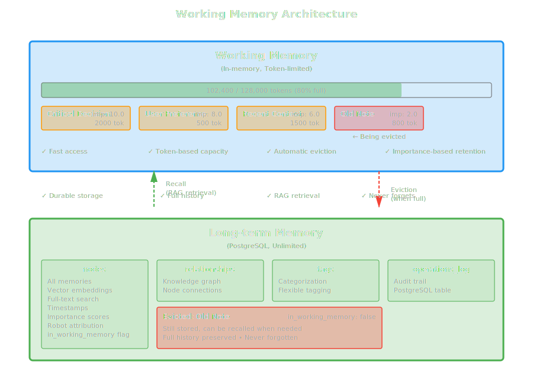

Working Memory Management¶
Working memory is HTM's token-limited active context system designed for immediate LLM use. This guide explains how it works, how to manage it effectively, and best practices for optimal performance.
What is Working Memory?¶
Working memory is an in-memory cache that:
- Stores active memories for fast access
- Respects token limits (default: 128,000 tokens)
- Evicts old/unimportant memories when full
- Syncs with long-term memory for durability
Think of it as RAM for your robot's consciousness - fast, limited, and volatile.
Architecture¶

Initialization¶
Configure working memory size when creating HTM:
# Default: 128K tokens (roughly 512KB of text)
htm = HTM.new(
robot_name: "Assistant",
working_memory_size: 128_000
)
# Large working memory for extensive context
htm = HTM.new(
robot_name: "Long Context Bot",
working_memory_size: 1_000_000 # 1M tokens
)
# Small working memory for focused tasks
htm = HTM.new(
robot_name: "Focused Bot",
working_memory_size: 32_000 # 32K tokens
)
Choosing Memory Size
- 32K-64K: Focused tasks, single conversations
- 128K-256K: General purpose, multiple topics (recommended)
- 512K-1M: Extensive context, long sessions
- >1M: Specialized use cases only (memory overhead)
How Working Memory Works¶
Adding Memories¶
When you add a node, it goes to both working and long-term memory:
htm.add_node(
"fact_001",
"User prefers Ruby for scripting",
type: :fact,
importance: 7.0
)
# Internally:
# 1. Calculate token count
# 2. Store in long-term memory (PostgreSQL)
# 3. Add to working memory (in-memory)
# 4. Check capacity, evict if needed
Recalling Memories¶
When you recall, memories are added to working memory:
memories = htm.recall(
timeframe: "last week",
topic: "database design"
)
# Internally:
# 1. Search long-term memory (RAG)
# 2. For each result:
# a. Check if space available
# b. Evict if needed
# c. Add to working memory
Automatic Eviction¶
When working memory is full, HTM evicts memories using a smart algorithm:
# Algorithm:
# 1. Calculate eviction score = importance × recency
# 2. Sort by score (lowest first)
# 3. Evict until enough space
# 4. Mark as evicted in long-term memory
Note
Evicted memories are not deleted - they remain in long-term memory and can be recalled later.
Monitoring Utilization¶
Basic Stats¶
wm = htm.working_memory
puts "Nodes: #{wm.node_count}"
puts "Tokens: #{wm.token_count} / #{wm.max_tokens}"
puts "Utilization: #{wm.utilization_percentage}%"
Detailed Monitoring¶
class MemoryMonitor
def initialize(htm)
@htm = htm
end
def report
wm = @htm.working_memory
stats = @htm.memory_stats
puts "=== Working Memory Report ==="
puts "Capacity: #{wm.max_tokens} tokens"
puts "Used: #{wm.token_count} tokens (#{wm.utilization_percentage}%)"
puts "Free: #{wm.max_tokens - wm.token_count} tokens"
puts "Nodes: #{wm.node_count}"
puts
puts "Average tokens per node: #{wm.token_count / wm.node_count}" if wm.node_count > 0
puts
puts "=== Long-term Memory ==="
puts "Total nodes: #{stats[:total_nodes]}"
puts "Database size: #{(stats[:database_size] / 1024.0 / 1024.0).round(2)} MB"
end
def health_check
util = @htm.working_memory.utilization_percentage
case util
when 0..50
{ status: :healthy, message: "Plenty of space" }
when 51..80
{ status: :warning, message: "Approaching capacity" }
when 81..95
{ status: :critical, message: "Nearly full, evictions likely" }
else
{ status: :full, message: "At capacity, frequent evictions" }
end
end
end
monitor = MemoryMonitor.new(htm)
monitor.report
health = monitor.health_check
puts "Health: #{health[:status]} - #{health[:message]}"
Eviction Behavior¶
Understanding Eviction¶
HTM evicts memories based on two factors:
- Importance: Higher importance = less likely to evict
- Recency: Newer memories = less likely to evict
# Eviction score calculation
score = importance × (1 / age_in_hours)
# Example scores:
# High importance (9.0), recent (1 hour): 9.0 × 1.0 = 9.0 (keep)
# High importance (9.0), old (24 hours): 9.0 × 0.042 = 0.38 (maybe evict)
# Low importance (2.0), recent (1 hour): 2.0 × 1.0 = 2.0 (evict soon)
# Low importance (2.0), old (24 hours): 2.0 × 0.042 = 0.08 (evict first)
Eviction Example¶
# Fill working memory
htm = HTM.new(
robot_name: "Test",
working_memory_size: 10_000 # Small for demo
)
# Add important fact (will stay)
htm.add_node(
"critical",
"Critical system password",
importance: 10.0
)
# Add many low-importance items
100.times do |i|
htm.add_node(
"temp_#{i}",
"Temporary note #{i}",
importance: 1.0
)
end
# Check what survived
wm = htm.working_memory
puts "Surviving nodes: #{wm.node_count}"
# Critical fact should still be there
critical = htm.retrieve("critical")
puts "Critical fact present: #{!critical.nil?}"
Manual Eviction¶
You can trigger eviction manually:
# Access the eviction mechanism (internal API)
needed_tokens = 50_000
evicted = htm.working_memory.evict_to_make_space(needed_tokens)
puts "Evicted #{evicted.length} memories:"
evicted.each do |mem|
puts "- #{mem[:key]}: #{mem[:value][0..50]}..."
end
Warning
Manual eviction is rarely needed. HTM handles this automatically during normal operations.
Best Practices¶
1. Set Appropriate Importance¶
# Critical data: Never evict
htm.add_node(
"api_key",
"Production API key",
importance: 10.0
)
# Important context: Retain longer
htm.add_node(
"user_goal",
"User wants to optimize database",
importance: 8.0
)
# Temporary context: Evict when needed
htm.add_node(
"current_topic",
"Discussing query optimization",
importance: 5.0
)
# Disposable notes: Evict first
htm.add_node(
"scratch",
"Temporary calculation result",
importance: 1.0
)
2. Monitor Utilization Regularly¶
class WorkingMemoryManager
def initialize(htm, threshold: 80.0)
@htm = htm
@threshold = threshold
end
def check_and_warn
util = @htm.working_memory.utilization_percentage
if util > @threshold
warn "Working memory at #{util}%!"
warn "Consider increasing working_memory_size or reducing context"
end
end
def auto_adjust_importance
util = @htm.working_memory.utilization_percentage
# If critically full, boost importance of current context
if util > 90
# Implementation would require tracking current context keys
# and updating their importance in the database
warn "Critical capacity reached"
end
end
end
3. Use Context Strategically¶
Don't load unnecessary data into working memory:
# Bad: Load everything
all_memories = htm.recall(
timeframe: "all time",
topic: "anything",
limit: 1000
)
# This fills working memory with potentially irrelevant data
# Good: Load what you need
relevant = htm.recall(
timeframe: "last week",
topic: "current project",
limit: 20
)
# This keeps working memory focused
4. Clean Up When Done¶
Remove temporary memories:
def with_temporary_context(htm, key, value)
# Add temporary context
htm.add_node(key, value, type: :context, importance: 2.0)
yield
# Clean up
htm.forget(key, confirm: :confirmed)
end
with_temporary_context(htm, "scratch_001", "Temp data") do
# Use the temporary context
context = htm.create_context(strategy: :recent)
# ... do work
end
# Temp data is now removed
5. Batch Operations Carefully¶
Be mindful when adding many memories at once:
# Risky: Might fill working memory quickly
1000.times do |i|
htm.add_node("item_#{i}", "Data #{i}", importance: 5.0)
end
# Better: Add with appropriate importance
1000.times do |i|
htm.add_node(
"item_#{i}",
"Data #{i}",
importance: 3.0 # Lower importance for bulk data
)
end
# Or: Monitor during batch operations
batch_data.each_with_index do |data, i|
htm.add_node("item_#{i}", data, importance: 5.0)
# Check capacity every 100 items
if i % 100 == 0
util = htm.working_memory.utilization_percentage
puts "Utilization: #{util}%"
end
end
Working Memory Strategies¶
Strategy 1: Sliding Window¶
Keep only recent memories:
class SlidingWindow
def initialize(htm, window_size: 50)
@htm = htm
@window_size = window_size
@keys = []
end
def add(key, value, **opts)
@htm.add_node(key, value, **opts)
@keys << key
# Evict oldest if window exceeded
if @keys.length > @window_size
oldest = @keys.shift
@htm.forget(oldest, confirm: :confirmed) rescue nil
end
end
end
Strategy 2: Importance Thresholding¶
Only keep high-importance memories:
class ImportanceFilter
def initialize(htm, min_importance: 7.0)
@htm = htm
@min_importance = min_importance
end
def add(key, value, importance:, **opts)
@htm.add_node(key, value, importance: importance, **opts)
# If low importance and memory is tight, evict immediately
if importance < @min_importance &&
@htm.working_memory.utilization_percentage > 80
# Let it evict naturally or remove from working memory
# (Note: HTM doesn't expose direct working memory removal,
# so we rely on natural eviction)
end
end
end
Strategy 3: Topic-Based Management¶
Group memories by topic and manage separately:
class TopicManager
def initialize(htm)
@htm = htm
@topics = Hash.new { |h, k| h[k] = [] }
end
def add(key, value, topic:, **opts)
@htm.add_node(key, value, **opts)
@topics[topic] << key
end
def clear_topic(topic)
keys = @topics[topic] || []
keys.each do |key|
@htm.forget(key, confirm: :confirmed) rescue nil
end
@topics.delete(topic)
end
def focus_on_topic(topic)
# Clear all other topics to make space
@topics.keys.each do |t|
clear_topic(t) unless t == topic
end
end
end
Token Counting¶
HTM uses Tiktoken to count tokens:
# Token counts vary by content
short = "Hello world" # ~2 tokens
medium = "A" * 100 # ~25 tokens
long = "word " * 1000 # ~1000 tokens
# Check token count of a string
embedding_service = HTM::EmbeddingService.new
tokens = embedding_service.count_tokens(long)
puts "Token count: #{tokens}"
Token vs Characters
- 1 token ≈ 4 characters (English)
- 128K tokens ≈ 512KB text
- Code uses fewer tokens per character
- Special characters use more tokens
Performance Considerations¶
Memory Overhead¶
Working memory has minimal overhead:
# Memory usage per node (approximate):
# - Key: ~50 bytes
# - Value: N bytes (your content)
# - Metadata: ~100 bytes
# - Total: ~150 bytes + content
# For 1000 nodes with 500-char content:
# 1000 × (150 + 500) = ~650KB
# Token count is stored but content dominates
Access Speed¶
Working memory is very fast:
require 'benchmark'
htm = HTM.new(robot_name: "Perf Test")
# Add 1000 memories
1000.times do |i|
htm.add_node("key_#{i}", "Value #{i}", importance: 5.0)
end
# Benchmark working memory access
Benchmark.bm do |x|
x.report("create_context:") do
1000.times { htm.create_context(strategy: :balanced) }
end
end
# Typical results:
# create_context: ~1ms per call
Optimization Tips¶
# 1. Avoid frequent context assembly
# Bad: Assemble context every message
def process_message(message)
context = htm.create_context # Slow if called frequently
llm.chat(context + message)
end
# Good: Cache context, update periodically
@context_cache = nil
@context_age = 0
def process_message(message)
if @context_cache.nil? || @context_age > 10
@context_cache = htm.create_context
@context_age = 0
end
@context_age += 1
llm.chat(@context_cache + message)
end
# 2. Use appropriate token limits
# Don't request more than your LLM can handle
context = htm.create_context(
strategy: :balanced,
max_tokens: 100_000 # Match LLM's context window
)
# 3. Monitor and adjust
util = htm.working_memory.utilization_percentage
if util > 90
# Reduce working memory size or increase eviction
end
Debugging Working Memory¶
Inspecting Contents¶
class WorkingMemoryInspector
def initialize(htm)
@htm = htm
end
def show_contents
wm = @htm.working_memory
puts "=== Working Memory Contents ==="
puts "Total nodes: #{wm.node_count}"
puts "Total tokens: #{wm.token_count}"
puts
# Access internal structure (advanced)
# Note: This requires access to WorkingMemory internals
# For production, use public APIs only
end
def find_large_nodes(threshold: 1000)
# Find nodes using many tokens
# This would require iterating working memory
# (not directly exposed in current API)
end
def show_eviction_candidates
# Show which nodes would be evicted next
# Based on importance and recency
end
end
Common Issues¶
Issue: Working memory always full
# Check if you're adding too much
stats = htm.memory_stats
wm_util = stats[:working_memory][:utilization]
if wm_util > 95
puts "Working memory consistently full"
puts "Solutions:"
puts "1. Increase working_memory_size"
puts "2. Lower importance of bulk data"
puts "3. Reduce recall limit"
puts "4. Clean up temporary data more frequently"
end
Issue: Important data getting evicted
# Increase importance of critical data
htm.add_node(
"critical_data",
"Important information",
importance: 9.5 # High enough to avoid eviction
)
Issue: Memory utilization too low
# Working memory underutilized
wm_util = htm.working_memory.utilization_percentage
if wm_util < 20
puts "Working memory underutilized"
puts "Consider:"
puts "1. Reducing working_memory_size to save RAM"
puts "2. Recalling more context"
puts "3. Using larger token limits in create_context"
end
Next Steps¶
- Context Assembly - Use working memory effectively with LLMs
- Long-term Memory - Understand persistent storage
- Adding Memories - Learn about importance scoring
Complete Example¶
require 'htm'
# Initialize with moderate working memory
htm = HTM.new(
robot_name: "Memory Manager",
working_memory_size: 128_000
)
# Monitor class
class Monitor
def initialize(htm)
@htm = htm
end
def report
wm = @htm.working_memory
puts "Utilization: #{wm.utilization_percentage}%"
puts "Nodes: #{wm.node_count}"
puts "Tokens: #{wm.token_count} / #{wm.max_tokens}"
end
end
monitor = Monitor.new(htm)
# Add memories with different importance
puts "Adding critical data..."
htm.add_node("critical", "Critical system data", importance: 10.0)
monitor.report
puts "\nAdding important data..."
10.times do |i|
htm.add_node("important_#{i}", "Important item #{i}", importance: 8.0)
end
monitor.report
puts "\nAdding regular data..."
50.times do |i|
htm.add_node("regular_#{i}", "Regular item #{i}", importance: 5.0)
end
monitor.report
puts "\nAdding temporary data..."
100.times do |i|
htm.add_node("temp_#{i}", "Temporary item #{i}", importance: 2.0)
end
monitor.report
# Check what survived
puts "\n=== Survival Check ==="
critical = htm.retrieve("critical")
puts "Critical survived: #{!critical.nil?}"
# Create context
puts "\nCreating context..."
context = htm.create_context(strategy: :important, max_tokens: 50_000)
puts "Context length: #{context.length} characters"
# Final stats
puts "\n=== Final Stats ==="
monitor.report